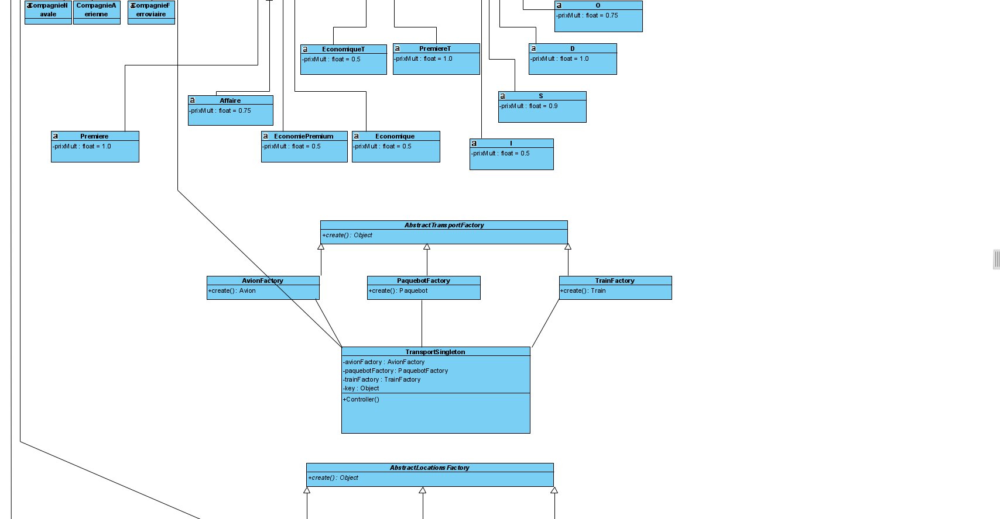
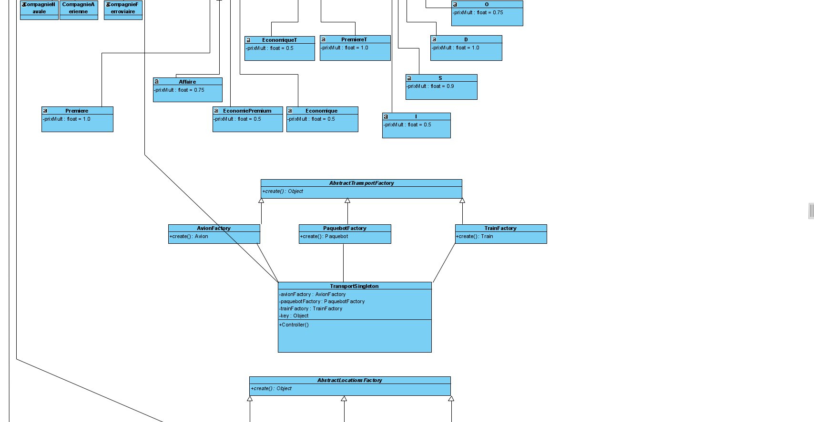

Nom: Siddharth Baichoo
Matricule: 20130259
Courriel: siddharth.baichoo@umontreal.ca
temps mis: 35 heures
Nom: Hamza Bellakhdim
Matricule: 20004834
Courriel: hamza.bellakhdim@umontreal.ca
temps mis: 10 heures
Nom: William Bach
Matricule: 20127144
Courriel: william.bach@umontreal.ca
temps mis: 40 heures
Soumetteur: William Bach
| Tâche | Siddharth | Hamza | William |
|---|---|---|---|
| Diagramme de classe révisé | 0% | 25% | 75% |
| Diagrammes de séquence | 100% | 0% | 0% |
| Diagramme de paquet | 0% | 0% | 100% |
| Discussion | 0% | 0% | 100% |
| Implémentation | 60% | 0% | 40% |
| Rapport | 0% | 0% | 100% |
Voici notre solution pour le diagramme de classes révisé avec les patrons de conception.

 

La dimension la plus importante apportée par l'introduction des patrons de conception est la réutilisabilité. En effet, par définition, les patrons sont des stratégies de conception applicables dans de multiples scénarios. Ce sont donc des classes générales qui pourront servir dans un projet ultérieur.

Ce patron gère l'instanciation des objets importants et assure une meilleure cohésion de nos classes car la responsabilité de création est déléguée. Il favorise les principes de conception DIP (car il encapsule la création d'entités), de SRP (car il délègue la responsabilité de création) et d'OCP (car il est facile d'agrandir le nombre de commandes).
Ce patron fait en sorte qu'il ne peut y avoir qu'un seul objet de Fabrique par entité. Par un mécanisme Orienté-Objet, il assure une contrainte d'intégrité essentielle.
Ce patron favorise la réutilisabilité et la maintenance et permet d'avoir une meilleure cohérence dans la logique de notre logiciel. Au lieu de simplement utiliser une énumération pour distinguer les états possibles d'un siège, on utilise une interface, ce qui permettra à l'avenir de rajouter des états à un siège sans modifier le code existant. Il favorise le principe d'OCP (car il est facile de rajouter des états).
Ce patron apporte au logiciel une fonctionnalité qui n'était pas présente précédemment, à savoir le fait de modifier la base de données générale après un changement opéré par un admin (ou client s'il fait une réservation / modifie son profil client). Il favorise le SRP car ce n'est pas aux gestionnaires d'implémenter cette fonctionnalité, de plus l'OCP est respecté car il utilise le mécanisme de l'héritage. Enfin, le couplage est minimal car il n'y a qu'une association entre le sujet et l'observateur principal (les "sous-observateurs" héritent de ce lien également).
Le patron Visiteur offre une interface qui permet d'appeler tous les Voyages du logiciel et les imprimer selon la forme spécifiée dans l'énoncé. Encore une fois, il favorise la cohésion en maintenant le principe de responsabilité unique. Cependant, le principe OCP est violé : en effet, si on veut rajouter une entité dans le logiciel, il faut modifier la classe Visiteur pour supporter le changement. Enfin, il augmente le couplage car il sépare la fonctionnalité de "Visite" ; c'est un compromis qui permet de mieux répondre au principe SRP.
Le patron Commande encapsule l'appel de fonctions de la part de l'administrateur pour les Entités Compagnie, Location et Voyage. Il sépare l'implémentation de la commande de la classe appelante (Invocateur) et on peut en déduire que le principe SRP est favorisé. De plus il est facile de rajouter ded nouvelles commandes, donc le principe d'OCP est également respecté. Il entraîne ainsi des classes plus cohésives bien que plus couplées.
Le patron MVC est une technique beaucoup utilisée en Programmation Orientée-Objet qui a fait ses preuves par le passé : il permet de séparer les classes de Vue de celles de Contrôle et sépare également le Modèle. Il en résulte une bonne utilisation du principe SRP et un couplage minimisé : les seules informations circulant entre les classes de Vue, Contrôle et Modèle sont les informations essentielles à la mise à jour du modèle et de l'Interface. De plus, en implémentant 2 interfaces différentes pour les usagers avec différentes permissions, l'ISP est également respecté.